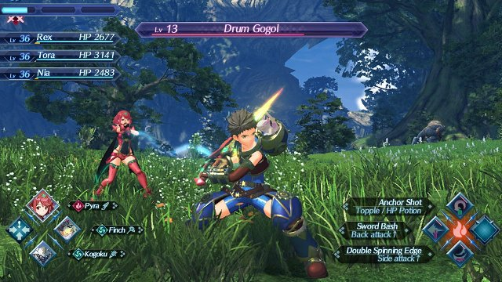

Xenoblade Chronicles 2 is een nieuwe RPG voor de Nintendo Switch met de regie in handen van Koh Kojima. De sfeervolle soundtrack is gecomponeerd door Kenji Hiramatsu, Manami Kiyota en Yasunori Mitsuda. Je kunt ervoor kiezen het spel te spelen met Engelse of met Japanse stemmen.
Verken een eindeloze wolkenoceaan, waar de laatste restanten menselijke beschaving voortbestaan op de rug van kolossale wezens die Titans worden genoemd. Je speelt het verhaal van Rex en zijn nieuwe vriendin Pyra: een zogenaamde Blade die Rex toegang geeft tot een immense kracht. Samen gaan Rex en Pyra op zoek naar Elysium, het ultieme paradijs voor de gehele mensheid.
De Titans zijn reusachtige beesten die verschillende beschavingen herbergen. Deze enorme beesten dragen een prachtige wereld op zich mee.
Maak vriendschappen met Blades, unieke wezens die Drivers toegang geven tot een immense kracht.
De game heeft een uniek gevechtssysteem dat aansluit op de succesformule van Xenoblade Chronicles en Xenoblade Chronicles X.
